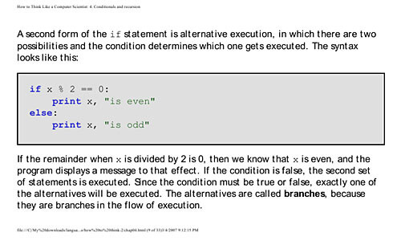
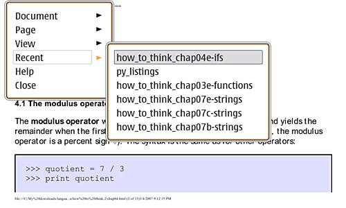
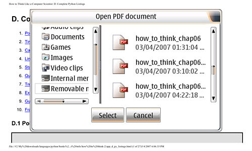

Author Archive for RogerS
Note: Links may not work or may take you to an archived page at the Internet Archive.
By RogerS June 15th, 2007
Categories: Internet tablet, Nokia N800, browser, flash, software and video
Ephraim Schwartz (whom I wrote for years ago) has a post at Reality Check, his Infoworld blog, about Opera’s work to replace Flash by incorporating native video capability in its browser.
I hope not only that this capability arrives soon, but that it migrates to our tablets soon after that.
By RogerS June 15th, 2007
Categories: Bluetooth, Internet tablet, Nokia N800 and walkaround web
For
the second time in recent months, I changed trains at the Newark Broad
Street station on my way to New York City and ended up sitting next to
another Nokia N800 owner on the 15-minute ride into the city.
My unnamed seatmate said his Internet Tablet enabled him to read
blogs and other websites on the train without having to carry a laptop.
We were long separated before I wondered whether he was connecting live
via his cellphone or reading pages he’d grabbed before his commute.
Nokia once lent me a cellphone and wireless account and I surfed on my train ride
into the city and even while walking from the train station to work.
That was simply great. Surfing while literally on the go — and not just
parked at a Starbucks while “away from my usual access point” — felt
tremendously liberating. Alas, the outrageous pricing of every telecom
has kept me from further on-the-go use of my NIT.
When our broadband provider had a several-hour-long
service interruption a couple weeks ago, I could hardly use my
computer. Even when working on local documents there were things I
needed to check on the internet. I couldn’t read the paper (washingtonpost.com), respond to my mail (that is, email), translate (online dictionary at sealang.net/khmer/, omegawiki) or ask questions of my colleagues (Vonage and voip was out too). The major work I was engaged in entailed collecting geographic information from various websites (CIA World Factbook, statoids.com, Wikipedia) and integrating it with our local content; I couldn’t make any headway on that.
In fact, without the internet, I was flailing around helplessly.
This morning, I was in fact able to work on my laptop on the train
ride, converting various files I’d downloaded earlier. I only had to
deal with 35 internet-less minutes. But work or regeneration time,
laptop or internet tablet, I can see I’m getting closer to the point of
needing that Bluetooth-cellphone connection for the commute.
By RogerS June 9th, 2007
Categories: Internet tablet, Nokia N800, video and webcam
We
went strawberry picking today and then poked around the farmer’s
market, looking at everything for sale. Here’s a link to a video I made
using the webcam in my N800:
www.mediamax.com/rsperberg/Hosted/vids/mango-lime-salsa.avi
I recorded the video using Nokia’s Camera app, version 2.7. [1] I
made 6 short videos and picked this one because it was made indoors and
has some really difficult things to image. As you can see, the video is
webcam-quality.
I had to convert it (using mediaconverter) before I could get the
video to play on my PC or in Media Player, so this the quality differs
slightly from what I saw when I played it from the Camera gallery. The
sound playback is better in Media Player than in Camera. This isn’t
from the conversion, because the pre-conversion sound is better on the
PC too.
You should be able to just stream the video, without having to download it.
ITT readers sondjata, SeRi@lDiE and Brendan responded to my webcam post by pointing out that Camera 2.7, available at garage.maemo.org, already does record video to the memory cards, so one of my three “I want”s is already available. Thanks!
By RogerS June 8th, 2007
Categories: voip, walkaround web and webcam
Look, to start with, the term used for the killer app for the Nokia Internet Tablet is not going to be “video calling.”
“Video calling” is so last century.
What we’ll call it when we can see the person we’re
messaging is anybody’s guess. Maybe “cam calls.” Or VidIP (video over
IP). Or VM (visual messaging).
“Video calling” is what the telecoms will charge hundreds of dollars for. It’s not what NIT users will be doing.
With a large universe of Skype users, NITs make dandy phones. But you know what? I’ve got phones up the, um, wazoo.
I haven’t had a tremendous experience with Nokia’s
very-beta internet calling, but what I’ve had makes me think that
webcam plus VoIP is less like a phone call and more like IMing without
typing.
When my kids tried out the N800
look-at-me calling, they didn’t act like it was a phone. They stayed
connected for forty minutes or longer and treated the NITs like video
walkie-talkies, roaming around the yard (and neighbors’ yards) and even
playing “you can see what I’m looking at” hide-and-seek.
I tried but wasn’t able to connect when an N800 was
temporarily at grandma’s. Connecting to her, I expect, would have been
more like a phone call with faces.
But I think the IM generation will make this walkaround webcam into just a really practical — no texting charges! no keying! — form of visual messaging, with bursts of messaging interspersed with periods of being connected but not communicating.
Thoughtfix advised me this week that webcams are
becoming standard issue in the second-generation UMPC tablets, which
means Skype cam calling will work between the Windows and Linux tablet
communities.
And you put mobility + visuals + internet-pricing together and you have a killer app for the, um, VM generation.
By RogerS June 7th, 2007
Categories: Internet tablet, Nokia N800, video, walkaround web and webcam
I think what I’d like is for the webcam on the Nokia N800 to do more than just make cam calls.
I’d like to be able to pop out the webcam and
connect not to another N800 but an app somewhere on the web that
captured the video transmission and stored it online*.
Hm-m. How about an app that runs on my PC and
captures the video I send over my local wifi network, and I can upload
it to the net later?
Or how about just an app that captures the video on my 4GB card in the N800?
See, the thing about the webcam in the Internet Tablet is that it’s portable, but it’s still connected to a computer. So why not add up webcam + tablet + mobility + wifi and do something internet-y?
* You can get 25 gigabytes of free storage for such videos at mediamax or pay $3/mo for 10 GB at omnidrive.
By RogerS June 6th, 2007
Categories: Internet tablet, Maemo, Nokia N800 and software
About
three years ago, I ran across a really lightweight wiki that included a
built-in server. Installing and running it locally was a breeze, which
meant I could use it for making notes and cross-referencing them. It
was written in Ruby and I exchanged a few emails with the developer,
who had gotten himself sidetracked into a bigger project, building a
Ruby-based web framework. The code wasn’t finished, but even a
non-programmer like me could see the elegance of Ruby and how deftly it
was used in the wiki.
The wiki was (and is) called Instiki (”instant wiki”), the developer was David Heinemeier Hansson, and the framework he was working on became Ruby on Rails (an accomplishment which led O’Reilly and Google to name him “hacker of the year”).
Given Nokia’s embrace of Python, I have despaired at
Ruby ever becoming a viable language for developing apps on the Nokia
Internet Tablets. (I say “despair” because I can understand Ruby but
don’t really grok Python.) Then yesterday I ran across a blog how-to on running Ruby on Rails on the N800. And a little digging here at ITT reveals a thread
discussing some of these matters. Someone even notes that there’s a
Google Summer of Code project to build Ruby bindings for Maemo.
Ruby on Rails on the N800! Real possibility of developing Ruby apps on our NITs — I like the way this is turning out!
By RogerS March 8th, 2007
Categories: Internet tablet, Nokia N800, e-books and python
Usually,
I steer clear of PDF files, especially on the Nokia N800 and 770
Internet Tablets. Documents are almost always designed for letter-size
pages, and I don’t read text where I have to scroll sideways as well as
up-and-down. This week, however, the N800’s PDF Reader was my
salvation. The app is better — faster, more stable — than I expected
but ignores hyperlinking.
When I read text on a Nokia Internet Tablet, I
prefer FBReader to the alternatives. Usually I’ll be able to convert my
text to the FB2 markup (this is simply XML, not a proprietary or binary
format), and FBReader lets me pick fonts and sizes by XML element, so I
can arrange this to my finicky satisfaction. And I prefer to page
through text using the + and - keys on top of the NIT.
I had chapters of the book in html files, but no
time for an html-to-fb2 transformation. So I grabbed a pdb I’d made a
while back, since that’s the prime alternative among the many formats
that FBReader will display.
The book
is entitled “How to Think Like a Computer Scientist: Learning with
Python,” written by Allen Downey, Jeffrey Elkner and Chris Meyers. I
was skimming through the text when I was stopped by a code example.
Here’s a screen capture from the N800:
Well, the code example isn’t stylable by FBReader in
pdb format, but if you can’t see the indents in Python examples, then
you’re missing something.
I found the book online at ibiblio.org
and then used Adobe Acrobat’s feature for making a PDF from web pages
with one key setting — making a custom page size 6 inches wide by 3.6
inches tall.
Opening this PDF, I set the page zoom to “fit page width” and got this sort of thing instead:

As you can see, not only are the lines indented, the
code is in a different font and keywords in a different color. All
that’s been lost in the quick-and-dirty pdb.
I experimented with a few different ways to make the
PDF. I found my most successful result by downloading each html
chapter, modifying the css stylesheet to choose Trebuchet MS as the
font and 16 pt as the font size, then making a PDF of the chapter.
(When I did the whole book from the website, the font size wasn’t
consistent throughout the chapters, why, I don’t know.)
That experimentation led me to discover one flaw in
the PDF reader — the Open dialog doesn’t display enough characters in a
file name. Here are two screen shots showing my chapter file tests in
the recent files list and in the Open dialog:


To be honest, I figured a 1135-page PDF would be too
unwieldy for the reader to manage, so I started out making individual
chapter files from my local html copies. Since the links weren’t
relative, I used the complete online version to make a single PDF of
everything, with the Table of Contents and Index linking to different
chapters.
To my surprise, the progress through the pages of
this huge document was no slower than through the small single-chapter
documents.
The links worked fine on my laptop, but not at all
in the NIT’s PDF Reader. Navigation in such a huge document is really
awkward without being able to use the links or bookmarks. Anyone know
more about the linking issue with PDFs?
— Roger Sperberg
For those who are interested, the PDF can be downloaded from here
Added later: Translations of this text into Portuguese and German are also available, as is a paper version from Green Tea Press.
The first version by Allen Downey was written with Java examples and
then a version rewritten by him for C++. The same clear-headed text was
then modified to introduce Python and Logo. I like this book and as its
title indicates, in order to learn to think like a computer scientist,
you will need to learn to think like a computer and also, hopefully,
simply how to think.
By RogerS February 17th, 2007
Categories: Internet tablet, e-books, python and software
Why I don’t want to sync
For me, the 38-minute train ride from Montclair into
New York City is my prime personal time for computing and writing. And
fast or slow, the WiFi-ization of America won’t reach that zone for a
long while I’m sure.* That means the commute is offline for now and
hereafter.
So I diligently worked out a plan to pluck
information off the web every morning, put it automatically into my
preferred reading format and transfer the info to my internet tablet to
read in FBReader.
Since FBReader gobbles up the Plucker pdb format
rather handily and Plucker desktop efficiently automates the webpage
plucking, I thought this would work nicely.
I was wrong.
Too much me
The process involves me too much and requires two
computers. It’s a system that was designed to use a person’s desktop
computer for the plucking and processing, sync to a Palm PDA, and
utilize the Palm for reading.
But why should I have to sync? My internet tablet has WiFi. It will run a python program. It’s got a great e-reader already.
Ah, the Linux version of Plucker desktop uses
wxWindows. I can’t run it on my internet tablet. Plus it has all the
sync-to-Palm conduit stuff.
What’s needed is an interface written for the internet tablet that sits on top of the already-written Python plucking code.
Then every morning (and afternoon), the stuff I want
to look at would be grabbed, streamlined and made ready for me to read
on the train.
Python-meister available?
Would that I could develop this on my own.
But, besides not being a developer, I found Python
unintelligible in my two attempts to learn it (and then found Ruby the
complete opposite — clear, elegant, intuitive). I realize I need
someone who knows what they’re doing to guide me when I get stuck,
which is often, even at my noice level (or: because of my novice level).
Still, the Python tools available for the Maemo are
so powerful and give me a real reason (and platform) to develop that I
look longingly at this project and wonder, What can I do to make it a
reality?
If there’s a Python-meister who sees in this a
project not too complex and which could be incredibly fruitful for the
internet tablet community . . . well, I’ll sign on as chief
cook-and-bottle-washer. Tester, UI guide and documenter. Evangelist.
I’ll do everything I can to make the project
succeed, apart from the, um, Python part. We await only the emergence
of a true code master.
________
* I could connect to a phone’s data plan and surf — I’ve done that, it’s great! — if I chose to squander my discretionary income on that instead of extravagances like children.
By RogerS February 15th, 2007
Categories: Internet tablet, Nokia N800, flash and video
Between a late-afternoon interview and schmooze time at the Nokia-Pop Sci party,
I had a chance to talk with Ari Jaaksi for more than 90 minutes on
Tuesday. Best moment: when he discussed the work the internet tablet
team has done on optimizing the software stack and improving (among
other things) video playback. He doesn’t claim to have achieved the
ultimate Flash viewing experience, but said that now YouTube video
wouldn’t be like watching a slideshow.
And then he proved it by going to YouTube and playing videos there. I made him play one video I’ve watched a lot (”Learn to Speak Body, Tape 5”
by Mitchell Rose) so I’d have a sense of how well it was playing. It
was fine. In fact, because that tape has actors in static poses at
times, Ari apologized for some hitches that didn’t actually occur.
The “short term” in his internet tablet road map
is described as “a few weeks” and he used the same time frame in our
discussion. Still talking Flash 7 and nothing beyond what the blog
says, but I’ll say from my firsthand experience that the improvement
coming is major.
Best of all is how Ari expresses the benchmark
evaluating the browsing and Flash experience for the Nokia tablets —
“what you experience on your PC.” To equal and (in some cases, like
WiFi connectivity) exceed that.
So whatever we get come March isn’t going to be the end.
By RogerS February 13th, 2007
Categories: Internet tablet, Nokia N800 and video
Internet Tablet Talk exclusive (at least for a few minutes)*
Nokia and Popular Science magazine announced a challenge to users of the Nokia N800 Internet Tablet to come up with their own improvements to the device, with
two winners to be showcased in the May and June issues of the magazine.
Winners will also each receive a free N800 tablet.
Given the wide range of software that has already
appeared, it seems the contest is oriented at the right group of
people. Specifically, Nokia and PopSci
say they’re looking for innovative applications, scripts, services or
hardware additions. A widget that monitors auctions, an application
that controls your home security system, and software enabling the N800
to be utilized as a city guide are among the suggested types of
applications.
Applications can be server- or network-based and can be utilized through the browser, email, chat or other inbuilt applications.
It reminds me of the contest I read about some months back for cleverest Maemo hacks at Guadec. Some of the winners then were NFlick (browse your Flickr collection from your tablet), KanjiLearner and Dasher (input via steering, rather than tapping).
As the requirements stress “exciting, new innovations,” presumably exciting existing innovations like VidConvert or FBReader do not qualify.
Deadline for the innovation that would be included
in the May issue is February 27; for the June issue, March 29. Nokia
reserves the right to include winning ideas in future OS or tablet
releases.
Here are some applications I’d like to see, but won’t be developing myself:
- An app that runs on a server that would capture my
end of an internet call, except I don’t really want to capture a call,
I want to video whatever it is I’m looking at and have the video stored
on that server instead of my local SD card
- A mash-up that would take GPS co-ordinates as I’m
walking around Paris, say, or Rome and show me websites for the, um,
sites I’m touring
- An app that would read a web-page aloud to me while I’m driving
- Heck, an app that would take the book I’m reading in FBReader and read it aloud
_______
* I attended the party announcing this challenge at the New York Nokia
store on 57th Street, and I’m pretty sure I’m the first person to post
on this topic since I left even before they held the drawing to win one
of three N800’s. And otherwise the press release won’t go out
electronically till tomorrow morning. So you heard it here first.
Probably.
|
|
|